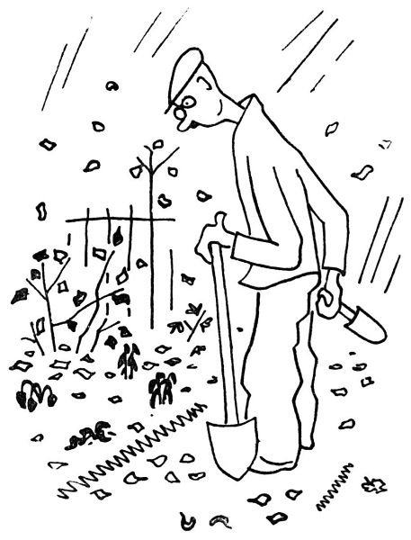

Zahradníkův říjen
Ono se řekne říjen; ono se řekne, že příroda se ukládá k spánku; zahradník to ví líp a poví vám, že říjen je stejně dobrý měsíc jako duben. Abyste věděli, říjen je první jarní měsíc, měsíc podzemního rašení a klíčení, skrytého rozpuku, nalévajících se pupenů; jen trochu hrábněte do půdy, a najdete nadělaných puků, tlustých jako palec, a křehkých klíčků a dychtivého kořání – nic platno, jaro je tady, i vyjdi ven, zahradníče, a sázej (jen pozor, abys nepřekrojil rýčem rašící cibulku narcisu).

Tedy mezi všemi měsíci je říjen měsíc vysazování a přesazování. Za časného jara stojí zahradník nad svým záhonkem, ze kterého tu a tam začíná vykukovat nějaký ten hrotek pupenů, a říká si zamyšleně: Tady to mám drobet holé a prázdné, budu sem muset něco přisadit. Za nějaký měsíc stojí zahradník nad týmž záhonkem, na kterém mu zatím narostly dvoumetrové mrcasy delfinií, džungle řimbaby, prales zvonků a čertví čeho ještě, a říká si zamyšleně: Tady to mám drobet přerostlé a přehoustlé, budu to muset vytento, probrat a rozsadit. – V říjnu stojí zahradník nad týmž záhonkem, ze kterého tu a tam čouhá suchý list nebo holý stvol, a říká si zamyšleně: Tady to mám drobet holé a prázdné, já sem něco přisadím, takhle šest floxů nebo nějaký ten větší aster. I jde a učiní tak. Život zahradníkův je pln změny a činorodé vůle.
Bruče tajeným uspokojením nalézá zahradník v říjnu na své zahrádce holá místa. Safra, praví sám k sobě, tady mně nejspíš něco zašlo, počkejme, musím na tohle prázdné místo něco vsadit; například zlatobýl, nebo raději cimicifugu, tu ještě nemám, ale astilbe by se tu dělala nejlíp; jenže pro podzim by se mně sem pasovalo pyrethrum uliginosum, ale takhle kamzičník pro jaro by také nebyl špatný; halt, já si sem dám monardu – buď Sunset, nebo Cambridge Scarlet; copak o to, hemerocallis by se tu taky dělala dobře. Načež v hlubokém rozjímání se ubírá domů, cestou si ještě vzpomínaje, že i morina je vděčná bylinka, neřkuli coreopsis, ale ani betonika by nebyla k zahození; potom si honem objedná v některém zahradnictví zlatobýl, cimicifugu, astilbe, pyrethrum uliginosum, kamzičník, monardu, hemerocallis, morinu, coreopsis, betoniku a ještě k tomu připíše anchusu a šalvěj, pak několik dní zuří, že mu ty kytky nejdou a nejdou, potom mu jich pošťák přinese veliký koš, načež se vrhne s rýčem na ono holé místo. Prvním zarytím vypáčí chuchval kořenů, na kterých se nahoře tlačí celý trs tlustých pupenů. Ježíšmarjá, zasténá zahradník, vždyť já tu mám vysázený upolín!

Ano, jsou náruživci, kteří chtějí mít na své zahrádce všecko, co náleží do šedesáti osmi rodů rostlin dvouděložných, patnácti jednoděložných, dvou nahosemenných – z tajnosnubných aspoň všechny kapraďovité, neboť s plavuněmi a mechy je kříž. Naproti tomu jsou náruživci ještě náruživější, kteří zasvětí svůj život jedinému druhu, ale ten chtějí a musejí mít ve všech dosud vypěstěných a pojmenovaných varietách. Tak například jsou cibuláři oddaní kultu tulipánů, hyacintů, lilií, chionodox, narcisů, tacet a jiných cibulovitých divů; dále primuláři a aurikulisti holdující výlučně prvosenkám, jakož i anemoniaci, zasvěcení řádu sasanek; dále irisníci čili kosatečníci, kteří by zahynuli žalem, kdyby neměli vše, co náleží do skupiny Apogon, Pogoniris, Regelia, Onocyclus, Juno a Xiphium, nepočítáme-li hybridy; jsou delphinisti, pěstující ostrožky, jsou růžaři čili rozariáni, kteří obcují jenom s paní Druschki, paní Herriotovou, paní Karolínou Testout, panem Wilhelmem Kordesem, panem Pernetem a četnými jinými osobnostmi, které se převtělily do růží; jsou fanatičtí floxisti čili filofloxové, kteří takhle v srpnu, kdy jim kvetou floxy, hlasitě pohrdají chryzantémany, což jim tito oplácejí v říjnu, když kvete Chrysanthemum indicum; jsou melancholičtí asterníci, kteří ze všech rozkoší života dávají přednost pozdním astrám, ale ze všech vášnivců nejdivočejší (ovšem krom kaktusářů) jsou jiřináři nebo georgiáni, kteří za nějakou novou americkou dahlii zaplatí závratnou sumu, třeba i dvacet korun. Z těchto všech jenom cibuláři mají jakousi historickou tradici, ba i svého patrona, a sice svatého Josefa, který, jak známo, má v ruce Lilium candidum, ačkoliv dnes už by si mohl opatřit Lilium Brownii leucanthum, jež je ještě bělejší. Proti tomu žádný svatý se nevyskytuje s floxem nebo s jiřinou; následkem toho jsou lidé oddaní kultu těchto květin sektáři a někdy zakládají i své vlastní církve.
Proč by ty kulty neměly mít své Životy svatých? Dejme tomu představte si život svatého Georgina z Dahlie. Georginus byl ctnostný a zbožný zahradník, kterému se po dlouhých modlitbách podařilo vypěstit první jiřiny. Když se o tom dozvěděl pohanský císař Floxinián, zaplál vztekem a vyslal své biřice, aby zatkli zbožného Georgina. „Ty košťálníku,“ zahřímal na něho císař Floxinián, „teď se budeš klanět odkvetlým floxům!“
„Nebudu,“ odpověděl pevně Georginus, „protože jiřiny jsou jiřiny a flox je jenom flox.“
„Rozsekejte ho,“ zařval ukrutný Floxinián; i rozsekali svatého Georgina z Dahlie a jeho zahradu zpustošili a posypali zelenou skalicí a sírou; ale z rozsekaných kusů těla svatého Georgina se udělaly hlízy všech příštích jiřin, a to pivoňkových, sasankových, jednoduchých, kaktusových, hvězdových, miňonek, pompón čili liliputek, rozet, kolaret i hybrid.

Takový podzim je přeúrodná doba; proti němu je jaro, abych tak řekl, drobet titěrné; podzim pracuje rád ve velkém měřítku. Stane se vám někdy, že by vám jarní fialinka narostla do tří metrů výšky nebo tulipán rostl a rostl, až by vám přerostl stromy? Tak vidíte; ale zato se vám přihodí, že si zjara zasadíte nějaký ten podzimní aster, a do října se vám z toho udělá dvoumetrový prales, do kterého se neodvážíte vkročit, protože byste už nenašli cestu ven; nebo vložíte v dubnu do půdy kořínek helenia nebo slunokvětu, a teď na vás jaksi ironicky kývají shůry zlaté květy, na které už nedosáhnete rukou, ani když se postavíte na špičky. To se přihází zahradníkovi co chvíli, že se trochu dostane z měřítka. Proto na podzim se provádí stěhování kytek; každého roku přenáší zahradník své perenky jako kočka koťata; každého roku si s uspokojením řekne: Tak, teď to mám všechno osázeno a v pořádku. Příštího roku si zas tak oddychne. Zahrádka není nikdy hotova. V tom směru je zahrádka podobna lidskému světu a všemu lidskému podnikání.